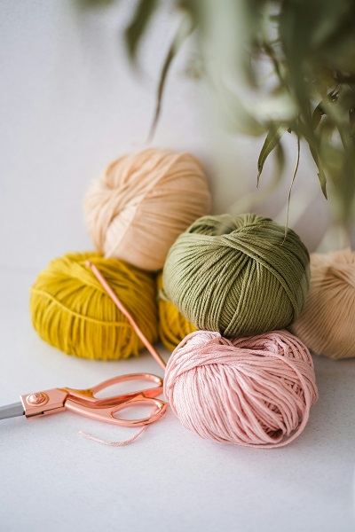
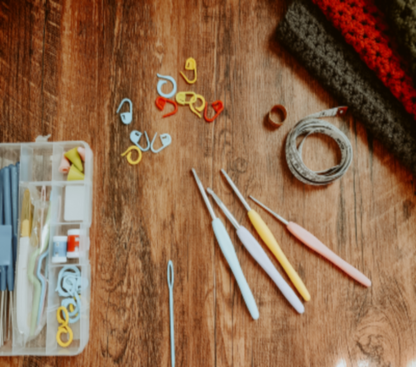

Crochet
5 Things You Must Know Before You Start Your Crochet Journey
Author: Ladele Simi
15th July, 2025
Introduction
Are you feeling the pull to pick up a crochet hook and dive into the world of yarn and creativity? Crochet is calming, creative, and a wonderful skill to learn. Before you begin, here are 5 essential things you must know.
1.Understand the Basics: What Is Crochet?
Crochet is a method of creating fabric using a hook and yarn. It differs from knitting as it uses a single hook instead of two needles. Common stitches include chain (ch), single crochet (sc), double crochet (dc), slip stitch (sl st), and yarn over (yo). Learning these will help you read patterns and follow tutorials easily.

2.Choosing the Right Tools and Materials
Start with a size H-8 (5mm) hook and worsted weight yarn (category 4). Light-colored, smooth yarns are best for beginners. You'll also need scissors, a yarn needle, and optionally stitch markers. Avoid novelty yarns at the beginning as they can be hard to manage.

3.Learn to Read Crochet Patterns and Diagrams
Crochet patterns come in written and charted forms. Get familiar with common abbreviations and symbols. Always read the pattern fully before starting, and pay attention to the gauge to ensure proper sizing.
4.Be Patient with Yourself: Progress Over Perfection
Crochet is a skill that improves with time and practice. Start with small, simple projects like dishcloths or granny squares. Mistakes are part of learning. Join communities online or locally for support and encouragement.

5.Explore and Experiment: Find Your Crochet Style
Crochet is incredibly versatile. Try different styles like amigurumi, granny squares, filet crochet, or Tunisian crochet. Experiment with various yarns and eventually design your own patterns.
Bonus Tips
- Don't crochet too tightly
- Take regular breaks
- Use video tutorials
- Track your progress through journals or photos
Conclusion
Every crocheter starts as a beginner. With patience, the right tools, and a willingness to learn, you'll create beautiful handmade pieces. Bookmark this guide, share it, and start your crochet journey with confidence.